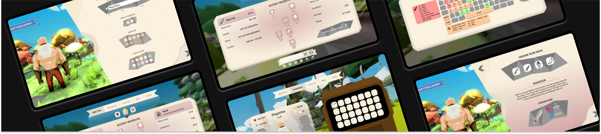
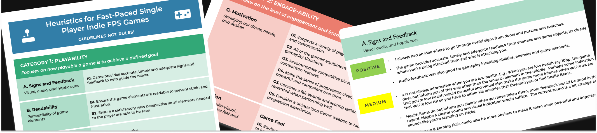
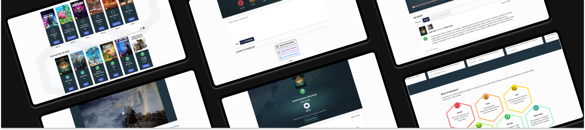

Developed a streamlined user interface design process for independent game developers, enhancing the user experience through tailored design strategies.

Screenshot of the user interface developed in the UX Design Master's Thesis project.
Heuristic Evaluation for Independent Games
Created a set of heuristics to assess the player experience in indie first-person shooter games, providing actionable feedback to improve identified usability issues.

Screenshot of the Heuristic Evaluation for Independent Games project.
Game Review Website Design
Designed a web platform focusing on user-friendly interfaces and community engagement.

Screenshot of the Game Review Website Design project.